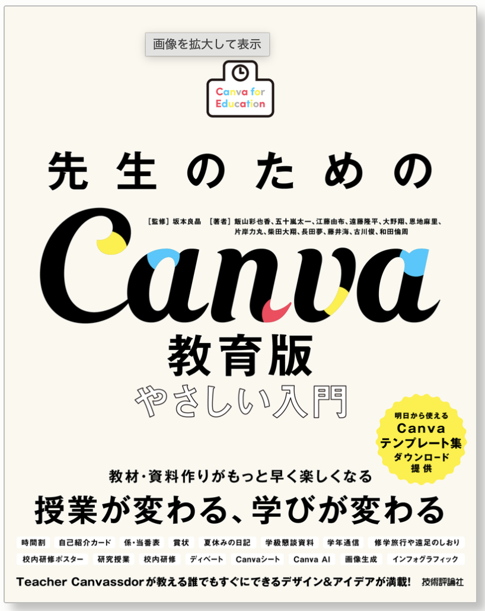

プロンプト1：会議録
この音声データを文字起こしした上で、校内会議の記録として整理してください。 次の項目に分けてまとめてください。 1. 会議の目的 2. 主な協議内容 3. 決定事項 4. 継続検討事項 5. 担当者 6. 期限 7. 次回までに行うこと 聞き取りが不明確な部分は推測せず、「聞き取り不明」と表示してください。

鹿児島県立開陽高等学校 定時制課程 進路支援部主任 / 国語科教諭・司書教諭
1969年東京生まれ。大学在学中からテレビ局での深夜番組制作に携わり、卒業後は東京赤坂のヨーロッパ専門の旅行会社に勤務。 退職後、古着と雑貨の輸入で起業した後、教職へ。初任・鹿屋高校、屋久島高校、鶴丸高校、鹿屋高校（2回目）を経て、 現在は開陽高校定時制課程で進路支援部主任を務める。ICTを活かした探究的な教育実践に注力している。
「国語を教えるのではなく、国語で『生き方』を伝える授業」が信条。

「授業の準備、もっとラクになりませんか？」現場でCanva教育版を使いこなす教員たちが、授業・校務のリアルな悩みを実例とともに解決していく一冊。
技術評論社サイトで見る会議や面談の録音データから記録を作成できる
同じ音声データを複数の文書形式に変換できる
Geminiを授業準備や校務に活用できる
Googleフォームを実際に作成できる
PowerPointをCanvaへ取り込める
Canva AIでスピーカーノートを作成できる
スマートフォンをプレゼンリモコンとして使える
研修サイトを使って一人で復習できる
Surface Go 2の録音とGeminiを組み合わせ、会議録や面談記録などを作成します。
授業案・ワークシート・保護者向け文書などをGeminiと一緒に作ります。
授業の振り返りフォームを実際に作成し、集計までを体験します。
PowerPointの取り込み、スピーカーノート生成、スマホリモコンを紹介します。
本サイトを使った研修後の復習方法を案内します。
Surface Go 2のサウンドレコーダーとGeminiを使った業務改善
Surface Go 2でサウンドレコーダーを開く
2〜3分程度の会話や説明を録音する
音声ファイルを保存する
Geminiへ音声ファイルをアップロードする
プロンプトを入力する
出力結果を比較する
この音声データを文字起こしした上で、校内会議の記録として整理してください。 次の項目に分けてまとめてください。 1. 会議の目的 2. 主な協議内容 3. 決定事項 4. 継続検討事項 5. 担当者 6. 期限 7. 次回までに行うこと 聞き取りが不明確な部分は推測せず、「聞き取り不明」と表示してください。
この音声データをもとに、学校で保存する面談記録の下書きを作成してください。 次の項目に分けてください。 1. 面談の概要 2. 生徒本人の発言 3. 教員から確認した内容 4. 現在の課題 5. 本人の希望 6. 今後の支援方針 7. 次回までの確認事項 事実と推測を明確に分け、音声にない情報は追加しないでください。
この面談内容を、保護者に共有するための丁寧で分かりやすい文章にしてください。 - 専門用語を避ける - 不安を過度にあおらない - 生徒のよい点も含める - 今後の対応を具体的に示す - 300字程度にまとめる
この会話の中から、今後行う必要があることだけを抽出してください。 次の表形式で整理してください。 - 実施事項 - 担当者 - 期限 - 優先度 - 確認方法 担当者や期限が音声内で決まっていない場合は、「未定」としてください。
この授業後の振り返り音声をもとに、授業記録を作成してください。 次の項目に分けて整理してください。 1. 本時の目標 2. 実施した活動 3. 生徒の反応 4. うまくいった点 5. 課題 6. 次回改善したいこと 7. AIからの改善提案 事実として話されていることと、AIからの提案を分けて表示してください。
あなたは高校の教員を支援する授業設計アドバイザーです。 次の条件で50分の授業案を作成してください。 教科： 学年： 単元： 本時の目標： 生徒の実態： 使用できるICT： 授業で重視したいこと： 次の形式で出力してください。 1. 本時の目標 2. 導入 3. 展開 4. まとめ 5. 生徒への発問 6. 使用教材 7. 評価方法 8. ICT活用のポイント
次の授業内容をもとに、高校生向けのワークシートを作成してください。 条件： - A4用紙1枚程度 - 生徒が考えて記入する欄を設ける - 難易度を段階的にする - 最後に振り返り欄を設ける - 教員用の解答例も別に作成する 授業内容： 対象学年： 教科： 単元：
次の内容を、保護者に配付する学校文書として整えてください。 条件： - 丁寧で分かりやすい - 必要事項が一目で分かる - 曖昧な表現を避ける - 日時、場所、持参物、提出期限を明確にする - A4用紙1枚以内 元の内容：
Google Workspaceのアプリ一覧からフォームを開き、新しいフォームを作成します。
「授業の振り返りフォーム」など、目的が分かるタイトルを付けます。
氏名、理解できたこと、分からないこと、参加度、次回の目標、質問などを追加します。
記述式、選択式、段階評価などを質問内容に合わせて選びます。
生徒側の画面を実際に確認し、質問文が分かりやすいか見直します。
リンクやQRコードで生徒に配布します。
「回答」タブで集計結果を確認し、必要に応じてスプレッドシートに連携します。
研修で作成したフォームのサンプルは「復習教材」セクションから確認できます。
今あるPowerPointを、より便利に活用する研修です
このプレゼンテーションの各スライドについて、高校生に説明するためのスピーカーノートを作成してください。 条件： - 1枚につき100〜150字程度 - スライドに書かれていない補足説明を入れる - 専門用語には簡単な説明を加える - 必要に応じて生徒への問いかけを入れる - 教員が自然に話せる文章にする

操作画面イメージ（準備中）
スマートフォンでCanvaアプリを開き、対象のプレゼンテーションを表示する
「プレゼンターツール」または同等のリモコン機能を選択する
PC側の発表画面と接続されていることを確認する
スマートフォンの画面をスワイプしてスライドを操作する
スピーカーノートとタイマーを手元で確認しながら発表する
この音声データを文字起こしした上で、校内会議の記録として整理してください。 1. 会議の目的 2. 主な協議内容 3. 決定事項 4. 継続検討事項 5. 担当者 6. 期限 7. 次回までに行うこと 聞き取りが不明確な部分は「聞き取り不明」と表示してください。
この音声データをもとに、学校で保存する面談記録の下書きを作成してください。 1. 面談の概要 2. 生徒本人の発言 3. 教員から確認した内容 4. 現在の課題 5. 本人の希望 6. 今後の支援方針 7. 次回までの確認事項 事実と推測を明確に分け、音声にない情報は追加しないでください。
この音声データをもとに、生徒指導記録の下書きを作成してください。 事実、生徒の発言、教員の対応、今後の方針を分けて整理してください。 推測や断定的な評価は加えず、確認が必要な部分は「要確認」としてください。
あなたは高校の教員を支援する授業設計アドバイザーです。 教科／学年／単元／本時の目標／生徒の実態／使用できるICT／授業で重視したいこと を条件として、 1.本時の目標 2.導入 3.展開 4.まとめ 5.生徒への発問 6.使用教材 7.評価方法 8.ICT活用のポイント の形式で50分の授業案を作成してください。
次の授業内容をもとに、高校生向けのワークシートを作成してください。 A4用紙1枚程度、記入欄あり、難易度を段階的にし、振り返り欄と教員用解答例も作成してください。 授業内容／対象学年／教科／単元：
この授業後の振り返り音声をもとに、授業記録を作成してください。 1.本時の目標 2.実施した活動 3.生徒の反応 4.うまくいった点 5.課題 6.次回改善したいこと 7.AIからの改善提案 事実として話されていることと、AIからの提案を分けて表示してください。
この面談内容を、保護者に共有するための丁寧で分かりやすい文章にしてください。 専門用語を避け、不安を過度にあおらず、生徒のよい点も含め、今後の対応を具体的に示し、300字程度でまとめてください。
次の内容を、保護者に配付する学校文書として整えてください。 丁寧で分かりやすく、必要事項が一目で分かり、曖昧な表現を避け、日時・場所・持参物・提出期限を明確にしてください。A4用紙1枚以内。 元の内容：
次のテーマについて、Googleフォームで使用するアンケート項目を作成してください。 選択式と記述式を組み合わせ、生徒が答えやすい表現にしてください。 テーマ：
このプレゼンテーションの各スライドについて、高校生に説明するためのスピーカーノートを作成してください。 1枚につき100〜150字程度、補足説明と生徒への問いかけを含め、教員が自然に話せる文章にしてください。
コピーしました
個人情報を含む資料を生成AIへ入力しないでください。児童生徒名、保護者名、住所、電話番号、成績、健康情報などは、 番号・記号・仮名に置き換えてください。AIが生成した内容は、そのまま使用せず、必ず教職員が内容を確認してください。
Surface Go 2のサウンドレコーダーでは一般的にm4aやwav形式で保存されます。使用する端末やアプリによって形式が異なるため、詳しくは学校で使用している端末の仕様をご確認ください。
ファイル形式や容量、通信環境によってアップロードできない場合があります。ファイル形式の変換や、時間を分けて録音するなどの対応をご検討ください。学校の端末環境によって制限がある場合は、情報担当の先生にご確認ください。
個人情報や要配慮情報の取り扱いについては、必ず学校や自治体の情報セキュリティ方針に従ってください。研修用の演習では、実際の生徒名や個人情報を含む音声は使用しないようにしてください。
AIの出力は必ず人が内容を確認し、事実と異なる部分がないかを確かめてから保存してください。面談記録や生徒指導記録など重要な記録は、AIの出力だけで確定しないようにしてください。
回答はフォームの「回答」タブに集計されるほか、Googleスプレッドシートと連携することで表形式でも保存・管理できます。保存先やアクセス権限については、学校のGoogle Workspace管理方針をご確認ください。
Canvaへの変換ではフォントや図形の位置がずれることがあります。変換後は全スライドを確認し、必要な箇所を手動で修正してください。元のPowerPointデータは必ず残しておくことをおすすめします。
学校アカウントでの教育版ライセンスが必要な場合があります。利用条件や申請方法については、学校の情報担当またはCanvaの公式案内をご確認ください。
はい、スマートフォン・タブレット・Surface Go 2・PCなど、さまざまな画面幅に対応しています。研修後の復習にもスマートフォンからご利用いただけます。